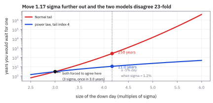
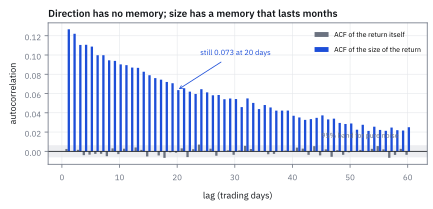
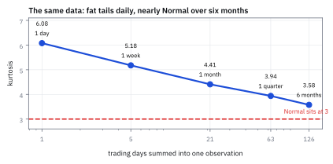
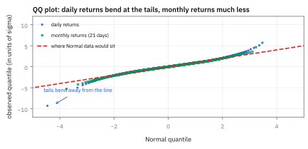

25.2 The Stylized Facts of Stock Returns
ห้าข้อที่ข้อมูลจริงบอกเสมอ และแบบจำลองสวย ๆ มักไม่ผ่าน
ใส่ Normal ลงบนผลตอบแทนรายวันที่ความผันผวน 1.2% ต่อวัน แล้วถามว่าวันที่ตลาดร่วง 5% ควรเกิดบ่อยแค่ไหน?
เฉลย: Normal ตอบว่า 1 ครั้งใน 258 ปี ส่วนหางแบบ power law ที่ดัชนี 4 ซึ่งพอดีกับข้อมูลจริงมากกว่า ตอบว่า 1 ครั้งใน 11 ปี ต่างกัน 23 เท่า และนี่เป็นแค่ข้อเดียวในห้าข้อที่ Normal พลาด อีกสี่ข้อคือ ผลตอบแทนแทบไม่มีความจำ แต่ขนาดของมันมีความจำยาวมาก และความหนาของหางบางลงเมื่อยืดช่วงเวลาออก
ศัพท์ที่ใช้ในหัวข้อนี้
- stylized facts
- ข้อเท็จจริงเชิงสถิติที่เจอซ้ำในทุกตลาด ทุกยุค ใช้เป็นด่านแรกที่แบบจำลองต้องผ่านก่อนเอาไปใช้จริง
- autocorrelation function (ACF)
- ค่าที่บอกว่าวันนี้กับวันก่อนหน้า k วันเดินไปทางเดียวกันแค่ไหน ใช้ตรวจว่าอดีตทำนายอนาคตได้หรือไม่
- heavy tails
- หางของ distribution หนากว่า Normal ทำให้เหตุการณ์สุดโต่งเกิดบ่อยกว่ามาก ใช้บอกว่าเพดานความเสี่ยงที่คิดจาก Normal ต่ำเกินไป
- power law
- รูปแบบหางที่โอกาสเกินค่า x ลดลงเป็น $x^{-\alpha}$ ใช้จำลองหางของผลตอบแทนหุ้น
- tail index
- เลข $\alpha$ ในสูตร power law ยิ่งเล็กหางยิ่งหนา ใช้บอกว่าโมเมนต์ลำดับไหนยังมีค่าจำกัด
- kurtosis
- ค่าที่วัดความหนาของหาง Normal มีค่า 3 ใช้เทียบว่าข้อมูลจริงหนากว่ากี่เท่า
- volatility clustering
- วันที่เหวี่ยงแรงเกาะกลุ่มกัน และช่วงสงบก็ยาว ใช้อธิบายว่าทำไมความผันผวนพยากรณ์ได้แม้ทิศทางจะพยากรณ์ไม่ได้
- Taylor effect
- ข้อสังเกตว่า ACF ของขนาดผลตอบแทนสูงกว่า ACF ของผลตอบแทนกำลังสอง ใช้เลือกว่าจะ model อะไรเป็นตัวแปรหลัก
- aggregational Gaussianity
- เมื่อรวมผลตอบแทนหลายวันเข้าด้วยกัน รูปร่างเข้าใกล้ Normal มากขึ้น ใช้บอกว่าแบบจำลองรายเดือนกับรายวันไม่จำเป็นต้องเหมือนกัน
- leverage effect
- วันที่ติดลบมักดันความผันผวนแรงกว่าวันบวกขนาดเท่ากัน ใช้เตือนว่าแบบจำลองที่สมมาตรอาจประเมิน downside ต่ำไป
- conditional distribution
- รูปร่างของผลตอบแทนพรุ่งนี้เมื่อรู้ทุกอย่างถึงวันนี้แล้ว ใช้แยกจากรูปร่างรวมทั้งกองที่ไม่สนเงื่อนไข
- unconditional distribution
- รูปร่างของผลตอบแทนเมื่อเทข้อมูลทุกวันรวมกันโดยไม่สนว่าวันนั้นสงบหรือปั่นป่วน ใช้เป็นสิ่งที่ histogram แสดง
- Geometric Brownian Motion (GBM)
- แบบจำลองราคาที่ log return เป็น Normal อิสระกันทุกวัน ใช้เป็นฐานของการตั้งราคา option และเป็นตัวที่ข้อเท็จจริงในหัวข้อนี้หักล้าง
- Generalized Autoregressive Conditional Heteroskedasticity (GARCH)
- แบบจำลองที่ให้ variance วันนี้ขึ้นกับ shock เมื่อวานและ variance เมื่อวาน ใช้สร้างข้อมูลจำลองที่มี volatility clustering ในหัวข้อนี้
- quantile-quantile plot (QQ)
- กราฟที่เอา quantile ของข้อมูลไปพล็อตกับ quantile ของ Normal ใช้ดูด้วยตาว่าหางหนากว่าตรงไหน
- exponentially weighted moving average (EWMA)
- ค่าเฉลี่ยที่ให้น้ำหนักอดีตลดลงแบบ exponential ใช้ประมาณความผันผวนให้ตอบสนองต่อข่าวใหม่เร็วกว่าหน้าต่างที่ถ่วงน้ำหนักเท่ากัน
- Student-t
- distribution รูประฆังที่หางหนากว่า Normal ควบคุมด้วยจำนวน degrees of freedom ใช้แทน Normal เมื่อหางไม่พอ
- degrees of freedom
- parameter ของ Student-t ยิ่งน้อยหางยิ่งหนา ใช้ปรับความหนาของหางให้ตรงกับข้อมูล
สัญลักษณ์ที่ใช้ในหัวข้อนี้
| สัญลักษณ์ | ความหมาย | หน่วย |
|---|---|---|
| $r_t$ | ผลตอบแทนส่วนเกินรายวัน วัน t | decimal ต่อวัน |
| $\sigma$ | ความผันผวนรายวันของ $r_t$ | decimal ต่อวัน |
| $x$ | ระดับที่สนใจ วัดเป็นจำนวนเท่าของ $\sigma$ | unitless |
| $\bar F(x)$ | โอกาสที่ขนาดของผลตอบแทนจะเกิน x | decimal |
| $\alpha$ | tail index ของ power law | unitless |
| $C$ | ค่าคงที่ที่ปรับให้ power law พาดผ่านจุดที่วัดได้ | unitless |
| $\rho_k$ | ACF ที่ lag k | unitless |
| $K$ | kurtosis Normal มีค่า 3 | unitless |
| $m$ | จำนวนวันที่รวมเข้าด้วยกันเป็นหนึ่งงวด | วันทำการ |
| $\nu$ | degrees of freedom ของ Student-t | unitless |
ที่มาที่ไป: ก่อนสร้างบ้าน ดูก้อนอิฐก่อน
ทั้ง Part นี้จะสร้างแบบจำลองที่ซ้อนกันหลายชั้น factor model บนผลตอบแทน covariance matrix บน factor return และ optimizer บน covariance matrix ถ้าชั้นล่างสุดผิด ทุกชั้นบนผิดตาม
สิ่งที่ดีคือ ผลตอบแทนหุ้นมีนิสัยที่ซ้ำเดิมทุกตลาดและทุกยุค จนคนเรียกมันว่า stylized facts ห้าข้อต่อไปนี้วัดซ้ำได้ตั้งแต่ตลาดหุ้นสหรัฐฯ ยันตลาดเกิดใหม่ ตั้งแต่ทศวรรษ 1960 จนวันนี้ ข้อไหนที่แบบจำลองของคุณทำไม่ได้ คือจุดที่มันจะพังในวันที่คุณต้องพึ่งมันที่สุด
ที่น่าสนใจคือ GBM ซึ่งเป็นฐานของการตั้งราคา option ทั้งหมดในบทที่ 10 ถึง 13 ทำนายว่า log return เป็น Normal และอิสระกันทุกวัน ข้อเท็จจริงสามในห้าข้อข้างล่างหักล้างมันโดยตรง นั่นไม่ได้แปลว่า GBM ไร้ประโยชน์ แต่แปลว่าเรารู้ว่ามันจะผิดตรงไหน
โจทย์: ข้อมูลรายวัน 400,000 วัน ที่สร้างให้เหมือนของจริง
โจทย์ให้อะไรมาบ้าง ผลตอบแทนรายวันชุดหนึ่งที่สร้างจาก GARCH(1,1) ด้วย ω = 3.1 × 10⁻⁶ α = 0.07 β = 0.90 และก้อนสุ่มเป็น Student-t ที่ degrees of freedom เท่ากับ 8 ปรับให้ variance เป็น 1 ชุดข้อมูลนี้ยาว 400,000 วัน ใช้ seed 11 เพื่อให้ผู้อ่านรันซ้ำได้ตรงกันทุกหลัก
ต้องหาห้าอย่าง โอกาสของวันที่ −5% ภายใต้ Normal เทียบกับภายใต้ power law ความผันผวนและ kurtosis ของชุดข้อมูล ACF ของผลตอบแทนเทียบกับ ACF ของขนาดผลตอบแทน kurtosis เมื่อยืดช่วงเวลาออกไป และ tail index ที่วัดได้
ขั้นที่ 1 — วันที่ −5% คือกี่ σ และ Normal ให้โอกาสเท่าไร
แปลงเป็นจำนวนเท่าของความผันผวนก่อน แล้วใช้ขอบบนขอบล่างของหาง Normal ซึ่งได้จากการแยกส่วนอินทิเกรตหนึ่งครั้ง ไม่ต้องเปิดตาราง
บรรทัดที่สองคือขอบที่บีบหาง Normal ไว้ทั้งสองข้าง ช่องว่างระหว่างขอบล่างกับขอบบนแคบแค่ 6% ที่ $|x|$ เท่านี้ จึงใช้ขอบบนแทนค่าจริงได้เลยในการคิดเลขในหัว
คำตอบ 258 ปี ควรทำให้รู้สึกผิดทันที ตลาดหุ้นสหรัฐฯ มีวันที่ร่วงเกิน 5% หลายครั้งในชีวิตคนคนเดียว ปี 1987 ปี 2008 และปี 2020 ต่างมีหลายวัน แบบจำลองที่บอกว่าต้องรอ 258 ปี ไม่ได้ผิดเล็กน้อย แต่ผิดคนละโลก
ขั้นที่ 2 — หางแบบ power law ตอบว่าอย่างไร
นี่คือนิยามของหางแบบ power law พร้อมการปรับค่าคงที่ให้พาดผ่านจุดที่ทั้งสองแบบยังใกล้กัน คือที่ 3σ แล้วดูว่ามันทำนายที่ 4.1667σ ว่าอย่างไร ใช้ $\alpha = 4$ ซึ่งเป็นค่าที่งานวัดหลายชิ้นได้ตรงกันสำหรับหุ้น
ตรงนี้คือจุดสำคัญ เราไม่ได้จูนหางให้หนาเป็นพิเศษ เราแค่บังคับให้ทั้งสองแบบตรงกันที่ 3σ ซึ่งเป็นจุดที่ข้อมูลยังพอมี แล้วปล่อยให้แต่ละแบบว่าไปตามธรรมชาติของมัน ห่างออกไปแค่ 1.17σ ผลต่างก็เป็น 23.5 เท่าแล้ว
ตรวจเองใน 10 วินาที power law ที่ดัชนี 4 หมายความว่าไกลออกไปเป็นสองเท่า โอกาสเหลือหนึ่งใน 16 ส่วน Normal ที่ขยับจาก 3σ ไป 6σ โอกาสเหลือหนึ่งในล้านกว่า สองอันนี้คนละสายพันธุ์กัน
Figure 25.2a — หาง Normal กับหาง power law: วันที่ −5% เกิดบ่อยแค่ไหน

แกนนอนคือขนาดของวันที่แย่ วัดเป็นจำนวนเท่าของความผันผวน แกนตั้งคือจำนวนปีที่ต้องรอ วัดบนสเกล logarithm ทั้งสองเส้นถูกบังคับให้ทับกันที่ 3σ ที่ 4.17σ ซึ่งคือวันที่ −5% Normal บอกให้รอ 258 ปี ส่วน power law บอก 11 ปี
แล้วเอาไปใช้ทำอะไรได้จริงบ้าง
ข้อเท็จจริงเหล่านี้ไม่ใช่เรื่องวิชาการ มันตัดสินว่าจะออกแบบระบบอย่างไรจริง ๆ บนโต๊ะ ความจริงที่ว่าผลตอบแทนไม่มีความจำแต่ขนาดของมันมี แปลว่าเราพยากรณ์ความเสี่ยงได้ดีกว่าพยากรณ์ผลตอบแทนมาก นั่นคือเหตุผลที่บทที่ 27 ทั้งบทเป็นเรื่องปั้น covariance matrix ให้ดี ขณะที่การพยากรณ์ผลตอบแทนถูกจัดการด้วยความระแวงตลอดบทที่ 29
ความจริงที่ว่าหางหนาแต่โมเมนต์ที่สี่ยังจำกัด แปลว่าความผันผวนประมาณได้ แต่ kurtosis ประมาณไม่ได้ นั่นเป็นเหตุผลเชิงเทคนิคที่ทั้งเล่มใช้ความผันผวนเป็นตัววัดความเสี่ยง ไม่ใช่โมเมนต์ที่สูงกว่านั้น
ขั้นที่ 3 — ข้อเท็จจริงที่ 1 และ 3: ทิศไม่มีความจำ แต่ขนาดมี
วัด ACF สามชุดบนข้อมูลชุดเดียวกัน ผลตอบแทนเอง ขนาดของมัน และกำลังสองของมัน ตัวเลขทั้งหมดมาจากชุดข้อมูลในโจทย์
แถวแรกคือศูนย์ในทุกแง่ที่วัดได้ ทิศทางของวันพรุ่งนี้ไม่ได้ซ่อนอยู่ในทิศทางของวันก่อน ๆ ถ้ามันซ่อนอยู่ ใครก็ตามที่มีข้อมูลราคาฟรีจะรวยไปแล้ว
แถวที่สองกับสามเป็นคนละเรื่องโดยสิ้นเชิง 0.13 ที่ lag 1 ยังเหลือ 0.07 ที่ 20 วัน และยังไม่เป็นศูนย์ที่ 60 วัน ขนาดของการเคลื่อนไหวมีความจำยาวเป็นเดือน นี่คือ volatility clustering และเป็นของขวัญชิ้นใหญ่ที่สุดที่ตลาดให้กับคนทำความเสี่ยง
ข้อควรระวังที่ลึกกว่านั้น ACF เป็นศูนย์ไม่ได้แปลว่าเป็นอิสระต่อกัน แถวที่สองพิสูจน์เรื่องนี้ในตัวเอง ถ้าผลตอบแทนอิสระกันจริง ขนาดของมันก็ต้องอิสระด้วย แต่มันไม่
Figure 25.2b — ทิศไม่มีความจำ แต่ขนาดมีความจำยาวเป็นเดือน

แท่งสีเทาคือ ACF ของผลตอบแทนเอง ซึ่งจมอยู่ในแถบความคลาดเคลื่อนตลอด แท่งสีเข้มคือ ACF ของขนาดผลตอบแทน ซึ่งเริ่มที่ 0.130 และยังไม่เป็นศูนย์แม้ผ่านไป 60 วันทำการ สองชุดนี้มาจากข้อมูลชุดเดียวกันทุกประการ
ขั้นที่ 4 — ข้อเท็จจริงที่ 2 และ 4: หางหนา แต่บางลงเมื่อยืดช่วงเวลา
วัด kurtosis ของชุดข้อมูลเดิม แล้ววัดซ้ำหลังรวมผลตอบแทนเป็นงวดยาวขึ้น พร้อมประมาณ tail index จากค่าที่เกิน 2.5% ด้วยสูตร maximum likelihood ของ power law
แถวที่สองคือ aggregational Gaussianity เห็นเป็นตัวเลข รายวัน kurtosis อยู่ที่ 6.08 ซึ่งหนากว่า Normal ที่ 3 อยู่เท่าตัว พอรวมเป็นสัปดาห์เหลือ 5.18 รวมเป็นเดือนเหลือ 4.41 และรวมเป็นครึ่งปีเหลือ 3.58 ยิ่งยืดยิ่งเข้าใกล้ Normal
แถวที่สามคือ tail index ที่ 5.21 ซึ่งมากกว่า 4 นั่นแปลว่าโมเมนต์ถึงลำดับที่ 5 ยังมีค่าจำกัด และโดยเฉพาะโมเมนต์ที่สี่มีค่าจำกัด ซึ่งเป็นเงื่อนไขพอดีที่ทำให้ความผันผวนประมาณได้อย่างมีหลักประกัน
เหตุผลคือ วิธีที่เราประมาณ variance ก็คือหาค่าเฉลี่ยของ $r^2$ Central Limit Theorem จะใช้กับค่าเฉลี่ยนั้นได้ก็ต่อเมื่อ $r^2$ มี variance จำกัด ซึ่งก็คือ $r$ ต้องมีโมเมนต์ที่สี่จำกัด นี่คือเหตุผลทั้งหมดที่เราวัดความเสี่ยงด้วยความผันผวน ไม่ใช่ด้วย kurtosis
Figure 25.2c — ยิ่งรวมหลายวัน หางยิ่งบาง เข้าใกล้ Normal

แกนนอนคือจำนวนวันที่รวมเป็นหนึ่งงวด บนสเกล logarithm แกนตั้งคือ kurtosis เส้นประคือค่า 3 ของ Normal จุดทั้งห้ามาจากชุดข้อมูลเดียวกัน แค่จัดกลุ่มใหม่ ความหนาของหางไม่ใช่สมบัติของตลาด แต่เป็นสมบัติของช่วงเวลาที่เลือกวัด
Figure 25.2d — QQ plot: ข้อมูลเดียวกันเทียบกับ Normal

ถ้าข้อมูลเป็น Normal จุดทุกจุดจะนอนบนเส้นทแยง ตรงกลางมันนอนพอดี แต่ปลายทั้งสองข้างงอออกจากเส้น ซึ่งคือหางที่หนากว่า Normal พอเปลี่ยนไปวัดผลตอบแทนรายเดือนของข้อมูลชุดเดียวกัน ปลายทั้งสองข้างเข้าใกล้เส้นมากขึ้นอย่างเห็นได้ชัด
ขั้นที่ 5 — สรุปว่าอะไรรอด อะไรไม่รอด
เอาแบบจำลอง GBM ที่เป็นฐานของการตั้งราคา option มาวางเทียบกับห้าข้อ นี่คือนิยามของ GBM ที่บทที่ 10 ใช้ และผลที่มันทำนายเกี่ยวกับ log return
GBM ผ่านข้อเดียวจากห้า และนั่นก็ไม่ได้แปลว่าต้องทิ้งมัน บทที่ 14 ใช้มันตั้งราคา option ได้ดีเพราะ option ราคาขึ้นกับ variance รวมตลอดอายุสัญญา ซึ่งเป็นปริมาณที่ทนต่อความผิดในรายละเอียดรายวันได้พอสมควร
แต่เวลาคุมความเสี่ยงรายวัน ความผิดสามข้อนั้นสำคัญมาก ข้อ 3 คือทั้งเหตุผลที่ GARCH กับ EWMA มีอยู่ ซึ่งเป็นเนื้อหาของหัวข้อ 25.5 และข้อ 2 คือเหตุผลที่ VaR ที่คิดจาก Normal ต่ำเกินจริงเสมอ
กับดัก: อ่าน ACF เป็นศูนย์ว่าอิสระ และเทียบ kurtosis คนละช่วงเวลา
กับดักแรกคืออ่าน ACF ของผลตอบแทนที่เป็นศูนย์ว่า “ผลตอบแทนอิสระกัน แปลว่าพยากรณ์ไม่ได้” สองอย่างนี้คนละเรื่อง ACF วัดความสัมพันธ์เชิงเส้นของทิศทางเท่านั้น ข้อมูลชุดเดียวกันที่ ACF ของผลตอบแทนเป็น 0.001 มี ACF ของขนาดเป็น 0.130 ถ้าผลตอบแทนอิสระกันจริง ตัวเลขที่สองต้องเป็นศูนย์ด้วย
กับดักที่สองคือเทียบ kurtosis ข้ามช่วงเวลา ชุดข้อมูลเดียวกันให้ 6.08 รายวันและ 3.58 รายครึ่งปี ถ้าเอา kurtosis รายเดือนของกองทุนหนึ่งไปเทียบกับ kurtosis รายวันของอีกกองหนึ่ง แล้วสรุปว่ากองแรกเสี่ยงหางน้อยกว่า นั่นคือการเทียบความถี่ในการวัด ไม่ใช่ความเสี่ยง
กับดักที่สามคือคิดว่า “หางหนา” แปลว่าโมเมนต์ทุกลำดับระเบิด ถ้า tail index อยู่ที่ 5.21 โมเมนต์ถึงลำดับ 5 ยังจำกัด ความผันผวนยังประมาณได้ปกติ ที่ประมาณไม่ได้คือของที่ต้องใช้โมเมนต์สูงกว่านั้น เช่น kurtosis เอง ซึ่งค่าที่วัดได้จะกระโดดไปมาตามว่าช่วงข้อมูลบังเอิญมีวันสุดโต่งกี่วัน
ข้อจำกัด: ข้อเท็จจริงเหล่านี้บอกอะไร และไม่บอกอะไร
| ข้อเท็จจริง | สิ่งที่มันบอก | สิ่งที่มันไม่บอก | ผลที่ตามมาเวลาใช้งาน |
|---|---|---|---|
| ACF ของผลตอบแทนเป็นศูนย์ | ทิศทางไม่ซ่อนอยู่ในราคาอดีตแบบเชิงเส้น | ไม่ได้บอกว่าอิสระ และไม่ได้บอกว่าตัวแปรอื่นทำนายไม่ได้ | alpha ต้องมาจากข้อมูลอื่น ไม่ใช่จากราคาตัวเองล้วน ๆ |
| หางหนา tail index ราว 4 ถึง 5 | เหตุการณ์สุดโต่งบ่อยกว่า Normal หลายสิบเท่า | ไม่ได้ระบุว่า distribution คืออันไหนแน่ | VaR จาก Normal ต่ำเกินจริง ต้องทดสอบด้วยข้อมูลจริง |
| ขนาดมีความจำ | ความผันผวนพยากรณ์ได้ | ไม่ได้บอกว่าจะกระโดดขึ้นเมื่อไร | แบบจำลองตามหลังการเปลี่ยนภาวะเสมอ ต้องมีกลไกเร่งอย่างในหัวข้อ 27.3 |
| ยืดช่วงเวลาแล้วเข้าใกล้ Normal | แบบจำลองรายเดือนใช้ Normal ได้ดีกว่ารายวัน | ไม่ได้แปลว่าความเสี่ยงหางหายไป | ตัวเลขความเสี่ยงต้องระบุความถี่ในการวัดเสมอ |
แถวที่สามคือเหตุผลที่หัวข้อ 27.3 มีอยู่ ระบบที่ตอบสนองช้าจะประเมินความเสี่ยงต่ำไปในวันที่ต้องการความแม่นที่สุด
สร้างข้อมูลและตรวจทุกตัวเลขในหัวข้อนี้
import numpy as np
from scipy import stats
# step 1: a -5% day under the Normal
sig, drop = 0.012, -0.05
x = drop / sig
assert abs(x + 4.1666667) < 1e-6
p = stats.norm.cdf(x)
assert abs(p - 1.5454297e-05) < 1e-11
lo = np.exp(-x * x / 2) / np.sqrt(2 * np.pi) * (1 / abs(x) - 1 / abs(x) ** 3)
hi = np.exp(-x * x / 2) / np.sqrt(2 * np.pi) * (1 / abs(x))
assert lo < p < hi and abs(lo - 1.5326e-05) < 1e-9 and abs(hi - 1.6263e-05) < 1e-9
assert abs(hi / lo - 1 - 0.0611) < 1e-3 # the bracket is only 6% wide
assert abs(1 / p / 251 - 257.8) < 0.1 # 258 years
# step 2: the same day under a power tail anchored at 3 sigma
p3 = stats.norm.cdf(-3)
assert abs(p3 - 1.3498980e-03) < 1e-9
pw = p3 * (abs(x) / 3) ** -4.0
assert abs(pw - 3.6276965e-04) < 1e-10
assert abs(1 / pw / 251 - 10.98) < 0.02 # 11 years
assert abs(pw / p - 23.47) < 0.01 # 23.5 times as often
assert abs(2.0 ** -4 - 0.0625) < 1e-15 # twice as far, 1/16 as likely
# steps 3-4: one synthetic series with all five facts in it
rng = np.random.default_rng(11)
n, w, a, b, nu = 400_000, 3.1e-6, 0.07, 0.90, 8
z = rng.standard_t(nu, n) / np.sqrt(nu / (nu - 2))
h = np.empty(n); h[0] = w / (1 - a - b); r = np.empty(n)
for t in range(n):
if t:
h[t] = w + a * r[t - 1] ** 2 + b * h[t - 1]
r[t] = np.sqrt(h[t]) * z[t]
assert abs(r.std() * 100 - 1.0086) < 5e-4
assert abs(r.std() * np.sqrt(251) * 100 - 15.98) < 5e-3
assert abs(stats.kurtosis(r, fisher=False) - 6.08) < 5e-3
def acf(v, k):
v = v - v.mean()
return float((v[:-k] * v[k:]).mean() / v.var())
assert all(abs(acf(r, k)) < 0.005 for k in (1, 5, 20, 60)) # fact 1
assert np.allclose([acf(abs(r), k) for k in (1, 5, 20, 60)],
[0.1301, 0.1149, 0.0734, 0.0204], atol=5e-4) # fact 3
assert np.allclose([acf(r ** 2, k) for k in (1, 5, 20, 60)],
[0.1307, 0.1238, 0.0795, 0.0185], atol=5e-4)
assert acf(abs(r), 1) > acf(r ** 2, 1) * 0.99 # the Taylor effect
K = [stats.kurtosis(r[:n // m * m].reshape(-1, m).sum(axis=1), fisher=False)
for m in (1, 5, 21, 63, 126)]
assert np.allclose(K, [6.08, 5.18, 4.41, 3.94, 3.58], atol=5e-3) # fact 4
assert all(K[i] > K[i + 1] for i in range(len(K) - 1)) # it only thins
xm = 0.025
tail = np.abs(r)[np.abs(r) > xm]
alpha = 1 + len(tail) / np.sum(np.log(tail / xm))
assert abs(alpha - 5.21) < 5e-3 and alpha > 4 # fourth moment is finiteบรรทัดสุดท้ายคือสิ่งที่ทำให้ทั้ง Part นี้ตั้งอยู่ได้ tail index มากกว่า 4 แปลว่าโมเมนต์ที่สี่จำกัด ซึ่งแปลว่าตัวเลขความผันผวนที่เราจะประมาณกันทั้งบทที่ 27 มีหลักประกันว่าจะลู่เข้า
ก่อนไปต่อ
ทั้งหัวข้อนี้สมมติเงียบ ๆ ว่าเรารู้ราคาที่ถูกต้อง แต่ราคาที่เห็นบนจอไม่ใช่ราคาที่ถูกต้อง มันคือราคาที่ถูกต้องบวกความคลาดเคลื่อนจากกลไกตลาด หัวข้อถัดไปจะวัดความคลาดเคลื่อนนั้น และแสดงว่ามันทิ้งลายนิ้วมือไว้ใน ACF ที่ lag 1 อย่างชัดเจน
สรุปที่ใช้ได้จริง
- วันที่ −5% คือ 4.17σ ถ้าความผันผวน 1.2% Normal บอกให้รอ 258 ปี power law ที่ดัชนี 4 ซึ่งพาดผ่านจุดเดียวกันที่ 3σ บอก 11 ปี ต่างกัน 23.5 เท่า
- ผลตอบแทนแทบไม่มี ACF แต่ขนาดของมันมี 0.130 ที่ lag 1 และยังไม่เป็นศูนย์ที่ 60 วัน ACF เป็นศูนย์จึงไม่เท่ากับเป็นอิสระต่อกัน
- kurtosis รายวัน 6.08 ลดเหลือ 5.18 รายสัปดาห์ 4.41 รายเดือน และ 3.58 รายครึ่งปี ความหนาของหางขึ้นกับความถี่ที่วัด ต้องระบุเสมอ
- tail index ราว 4 ถึง 5 แปลว่าโมเมนต์ที่สี่จำกัด ความผันผวนจึงประมาณได้อย่างมีหลักประกัน ส่วน kurtosis ประมาณไม่ได้ นี่คือเหตุผลที่ทั้งเล่มวัดความเสี่ยงด้วยความผันผวน
- GBM ผ่านข้อเดียวจากห้าข้อ ใช้ตั้งราคา option ได้เพราะราคาขึ้นกับ variance รวม แต่ใช้คุมความเสี่ยงรายวันไม่ได้โดยไม่เติมกลไกเรื่องความผันผวนที่เปลี่ยนตามเวลา